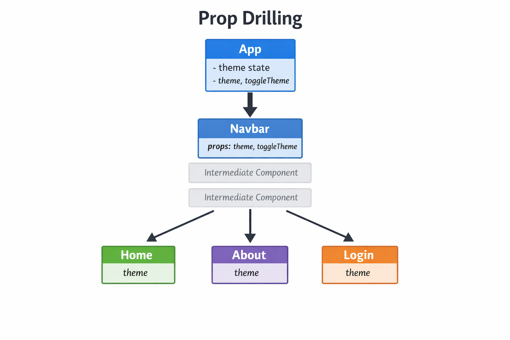
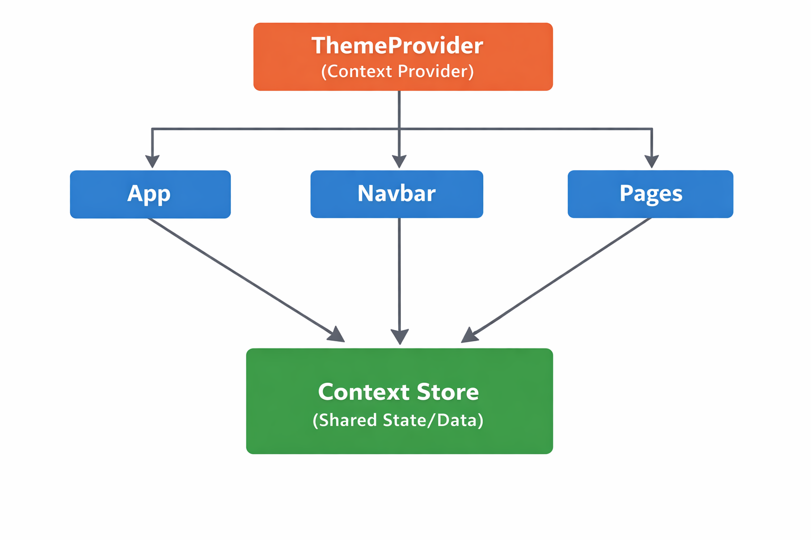

What does "Prop Drilling" mean in React development?
Prop drilling occurs when you need to pass data from a top-level component down to a deeply nested component through multiple intermediate components that don't actually need that data. This makes the code harder to read, maintain, and refactor.
In this example, we'll store the theme state in the App component and pass it down through props to the Navbar and then to each page component.

npm install react-router-domsrc/
├── App.jsx
├── main.jsx
├── components/
│ ├── Navbar.jsx
│ ├── Home.jsx
│ ├── About.jsx
│ └── Login.jsx
└── index.cssThe App component manages the theme state and passes it down to child components. Notice how we have to pass theme and toggleTheme to Navbar, which then passes theme to the pages.
import { useState } from 'react';
import { BrowserRouter as Router, Routes, Route } from 'react-router-dom';
import Navbar from './components/Navbar';
import Home from './components/Home';
import About from './components/About';
import Login from './components/Login';
function App() {
// Theme state stored at the top level
const [theme, setTheme] = useState('light');
// Function to toggle theme
const toggleTheme = () => {
setTheme(theme === 'light' ? 'dark' : 'light');
};
// Console log to show re-renders
console.log('App re-rendered');
return (
<Router>
<div className={`app ${theme}`}>
{/* Pass theme and toggleTheme to Navbar */}
<Navbar theme={theme} toggleTheme={toggleTheme} />
<Routes>
{/* Pass theme to each page component */}
<Route path="/" element={<Home theme={theme} />} />
<Route path="/about" element={<About theme={theme} />} />
<Route path="/login" element={<Login theme={theme} />} />
</Routes>
</div>
</Router>
);
}
export default App;The Navbar component receives theme and toggleTheme as props. It uses toggleTheme for the button but doesn't need theme itself. However, it still has to receive and potentially pass theme down.
import { Link } from 'react-router-dom';
function Navbar({ theme, toggleTheme }) {
// Console log to show re-renders
console.log('Navbar re-rendered');
return (
<nav className={`navbar navbar-expand-lg ${theme === 'dark' ? 'navbar-dark bg-dark' : 'navbar-light bg-light'}`}>
<div className="container">
<Link className="navbar-brand" to="/">My App</Link>
<div className="navbar-nav">
<Link className="nav-link" to="/">Home</Link>
<Link className="nav-link" to="/about">About</Link>
<Link className="nav-link" to="/login">Login</Link>
</div>
<button className="btn btn-outline-primary ms-auto" onClick={toggleTheme}>
Toggle {theme === 'light' ? 'Dark' : 'Light'} Theme
</button>
</div>
</nav>
);
}
export default Navbar;What is the primary maintenance drawback of severe prop drilling across 6 or more component levels?
Each page component receives the theme prop and uses it to style the page. This is the deepest level where the theme is actually needed.
function Home({ theme }) {
// Console log to show re-renders
console.log('Home re-rendered');
const styles = {
backgroundColor: theme === 'dark' ? '#333' : '#fff',
color: theme === 'dark' ? '#fff' : '#000',
minHeight: '80vh',
padding: '2rem'
};
return (
<div style={styles}>
<h1>Home Page</h1>
<p>Welcome to the home page. Current theme: {theme}</p>
</div>
);
}
export default Home;function About({ theme }) {
console.log('About re-rendered');
const styles = {
backgroundColor: theme === 'dark' ? '#333' : '#fff',
color: theme === 'dark' ? '#fff' : '#000',
minHeight: '80vh',
padding: '2rem'
};
return (
<div style={styles}>
<h1>About Page</h1>
<p>This is the about page. Current theme: {theme}</p>
</div>
);
}
export default About;function Login({ theme }) {
console.log('Login re-rendered');
const styles = {
backgroundColor: theme === 'dark' ? '#333' : '#fff',
color: theme === 'dark' ? '#fff' : '#000',
minHeight: '80vh',
padding: '2rem'
};
return (
<div style={styles}>
<h1>Login Page</h1>
<p>Please log in. Current theme: {theme}</p>
</div>
);
}
export default Login;Which three fundamental APIs are required to share state across components using React Context?
React Context API allows you to share data (state) across the component tree without having to pass props down manually at every level. It's perfect for global app data like themes, user authentication, or language preferences.
We'll create a ThemeContext and ThemeProvider to manage the theme state globally.

import { createContext, useContext, useState } from 'react';
const ThemeContext = createContext();
export const ThemeProvider = ({ children }) => {
const [theme, setTheme] = useState('light');
const toggleTheme = () => {
setTheme(theme === 'light' ? 'dark' : 'light');
};
return (
<ThemeContext.Provider value={{ theme, toggleTheme }}>
{children}
</ThemeContext.Provider>
);
};
export const useTheme = () => useContext(ThemeContext);// ContextDemo.jsx - Complete runnable Context API implementation
import React, { createContext, useContext, useState } from 'react';
// 1. Create the Context
const ThemeContext = createContext();
// 2. Provider Component
export function ThemeProvider({ children }) {
const [theme, setTheme] = useState('light');
const toggleTheme = () => setTheme(t => (t === 'light' ? 'dark' : 'light'));
return (
<ThemeContext.Provider value={{ theme, toggleTheme }}>
{children}
</ThemeContext.Provider>
);
}
// 3. Custom Hook for easy consumption
export function useTheme() {
return useContext(ThemeContext);
}
// 4. Nested Deep Child Component (No props passed from parent!)
function ThemeToggleButton() {
const { theme, toggleTheme } = useTheme();
return (
<button
onClick={toggleTheme}
style={{
padding: '10px 20px',
borderRadius: '8px',
cursor: 'pointer',
fontSize: '16px',
border: 'none',
backgroundColor: theme === 'light' ? '#0f172a' : '#f8fafc',
color: theme === 'light' ? '#f8fafc' : '#0f172a'
}}
>
Current Theme: {theme.toUpperCase()} (Click to Toggle)
</button>
);
}
// 5. Intermediate Component (Demonstrates ZERO prop drilling)
function HeaderBar() {
return (
<header style={{ padding: '16px', borderBottom: '1px solid #ccc', display: 'flex', justifyContent: 'space-between', alignItems: 'center' }}>
<h3>🚀 MyApp Navigation</h3>
<ThemeToggleButton /> {/* Deep consumer without passing any props through HeaderBar! */}
</header>
);
}
// 6. Main App
export default function App() {
return (
<ThemeProvider>
<div style={{ fontFamily: 'sans-serif', minHeight: '300px', padding: '20px' }}>
<HeaderBar />
<main style={{ marginTop: '20px' }}>
<h2>Welcome to Prop-Drilling Free Architecture</h2>
<p>The ThemeToggleButton accesses global theme state directly via useContext() without passing props through intermediate components!</p>
</main>
</div>
</ThemeProvider>
);
}ThemeProvider down to any descendant component via useContext().
src/App.jsx of your Vite React project.npm run dev in terminal.A fully working React app with global ThemeProvider and a nested child reading theme directly via useTheme().
How does a deeply nested component access the current theme value from ThemeContext without any props being passed to it?
App.jsx is much cleaner. No more prop drilling!
import { BrowserRouter, Routes, Route } from 'react-router-dom';
import { ThemeProvider } from './ThemeContext';
import Navbar from './Navbar';
import Home from './Home';
import About from './About';
function App() {
return (
<ThemeProvider>
<BrowserRouter>
<Navbar />
<Routes>
<Route path="/" element={<Home />} />
<Route path="/about" element={<About />} />
</Routes>
</BrowserRouter>
</ThemeProvider>
);
}
export default App;Navbar now uses the useTheme hook to access theme and toggleTheme directly from context.
import { useTheme } from './ThemeContext';
function Navbar() {
const { theme, toggleTheme } = useTheme();
return (
<div>
<button onClick={toggleTheme}>
Switch to {theme === 'light' ? 'Dark' : 'Light'}
</button>
</div>
);
}
export default Navbar;Pages now use the useTheme hook directly.
import { useTheme } from './ThemeContext';
function Home() {
const { theme } = useTheme();
const styles = {
background: theme === 'dark' ? '#333' : '#fff',
color: theme === 'dark' ? '#fff' : '#000',
height: '100vh',
};
return (
<div style={styles}>
<h1>Home Page</h1>
<p>Theme: {theme}</p>
</div>
);
}
export default Home;Similarly for About.jsx and Login.jsx - just import useTheme and use it.
Which type of data is the best candidate for management via React Context API?
Why should you avoid putting rapidly changing state (e.g. high-frequency cursor coordinates or keystrokes) into a top-level Context?
Context is great for global app state, but don't overuse it:
As shown in the ThemeProvider, we can persist the theme choice so it survives page refreshes.
// In ThemeProvider
const [theme, setTheme] = useState(() => {
const savedTheme = localStorage.getItem('theme');
return savedTheme || 'light';
});
// Save whenever theme changes
useEffect(() => {
localStorage.setItem('theme', theme);
}, [theme]);Update the Navbar to show the current theme.
<button className="btn btn-outline-primary ms-auto" onClick={toggleTheme}>
{theme === 'light' ? '🌞' : '🌙'} {theme.charAt(0).toUpperCase() + theme.slice(1)} Theme
</button>Here's the complete ThemeContext with all bonus features:
import { createContext, useContext, useState, useEffect } from 'react';
const ThemeContext = createContext();
export const useTheme = () => {
const context = useContext(ThemeContext);
if (!context) {
throw new Error('useTheme must be used within a ThemeProvider');
}
return context;
};
export const ThemeProvider = ({ children }) => {
const [theme, setTheme] = useState(() => {
const saved = localStorage.getItem('theme');
return saved || 'light';
});
const toggleTheme = () => {
setTheme(prev => {
const newTheme = prev === 'light' ? 'dark' : 'light';
localStorage.setItem('theme', newTheme);
return newTheme;
});
};
useEffect(() => {
document.body.className = theme;
}, [theme]);
const value = {
theme,
toggleTheme,
isDark: theme === 'dark',
isLight: theme === 'light'
};
return (
<ThemeContext.Provider value={value}>
{children}
</ThemeContext.Provider>
);
};